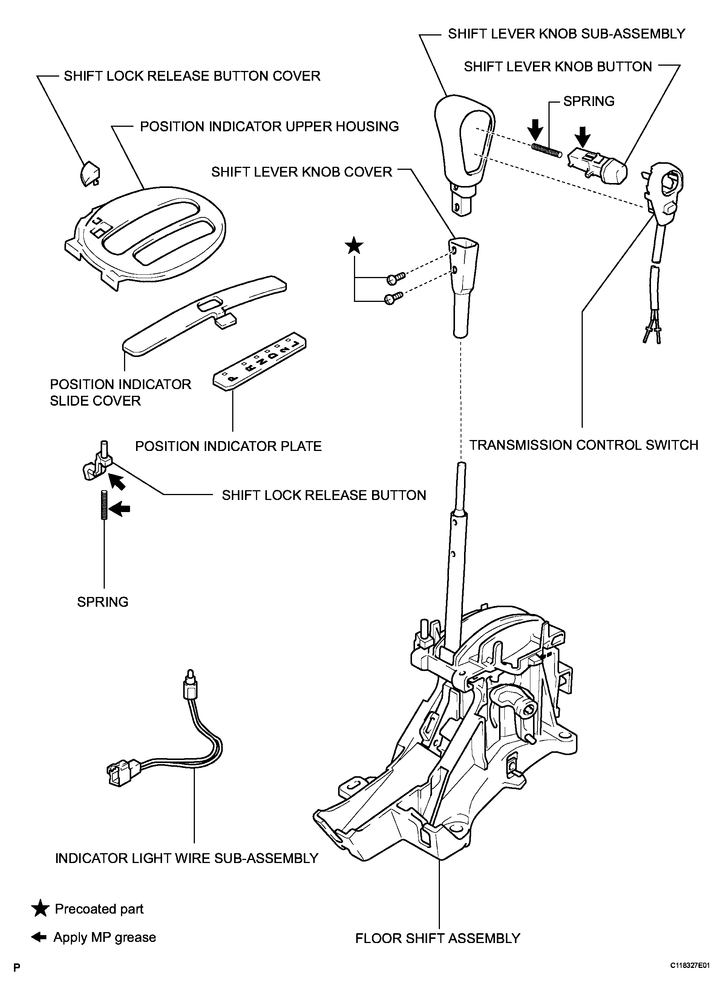

Floor Shift Assembly: Components
WARNING: This page is about a different variant/trim than selected.
 Courtesy of © TOYOTA, LICENSE AGREEMENT TMS1002
Courtesy of © TOYOTA, LICENSE AGREEMENT TMS1002
Courtesy of © TOYOTA, LICENSE AGREEMENT TMS1002Courtesy of © TOYOTA, LICENSE AGREEMENT TMS1002
Courtesy of © TOYOTA, LICENSE AGREEMENT TMS1002